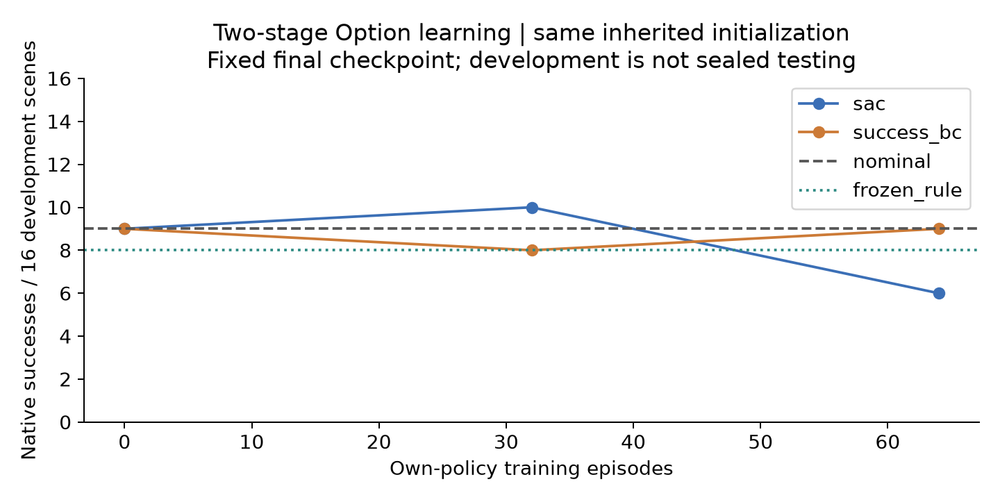
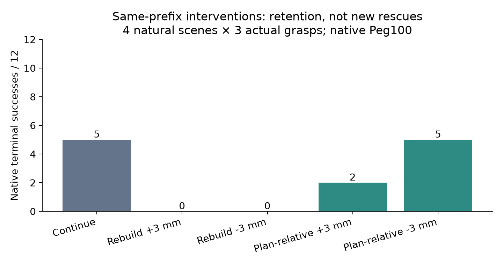
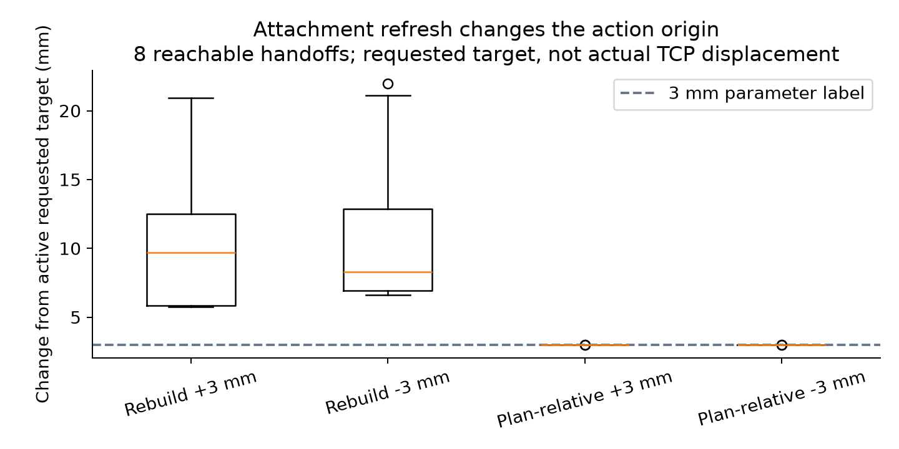
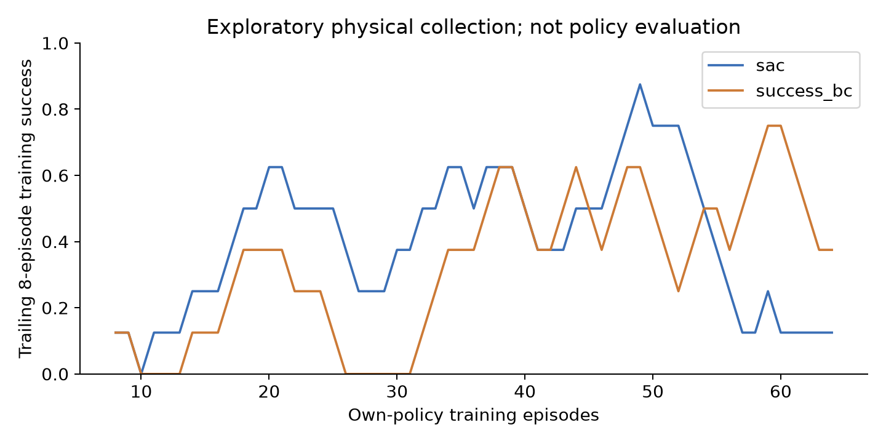

PegInsertionSide-v1 · native100 · actual simulation · independent method gain UNVERIFIED
Full scope and limitations · Verified native results · Archive SHA
| Final policy | New development /16 | Rescue / regression |
|---|---|---|
| Nominal | 9 | 0 / 0 |
| Frozen rule | 8 | 1 / 2 |
| Own-policy Option-SAC | 6 | 1 / 4 |
| Own-policy SAC + success BC | 9 | 1 / 1 |



Zero-offset attachment refresh also fails all five nominal-success contexts. Remaining-target −3mm preserves five but adds no new rescue. Four scenes × three real grasps; not12 independent scenes.
Frame-synchronized viewer · Full RAW video
Measured pose playback from full native trajectories; no new physics or new RL claim. No interactive browser QA claimed.

Exact interrupted-training comparison · Resume guards · Own-buffer and native duration audit